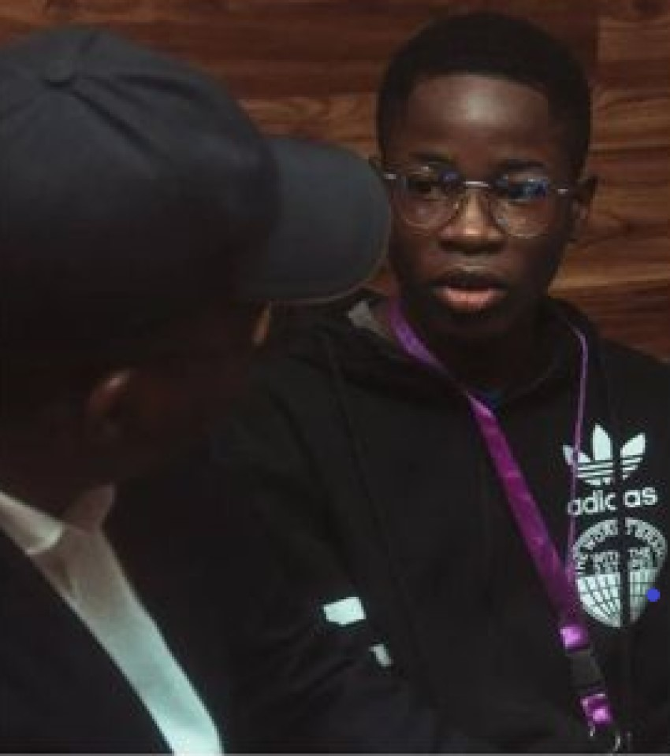

They say the streets are tough, the economy is unpredictable, and the job market is tighter than a closed fist. But if there's one thing young Nigerians have mastered, it's turning pressure into diamonds.
Welcome to the new hustle code—where youth entrepreneurship isn't just a backup plan, it's the plan.
FROM SIDE HUSTLE TO MAIN MISSION
For years, "What do you do?" was a simple question. Today, it's layered. A typical answer sounds more like, "I'm a digital marketer, I run a thrift store on Instagram, and I'm building a skincare line on the side." Nigerian youth are not waiting for opportunities—they're building them.
The post-pandemic era, fueled by rising internet access and social media platforms, opened a floodgate of innovation. Instagram stores, TikTok marketing, WhatsApp business catalogs, virtual assistants, and online tutoring are now thriving industries. Gen Z and Millennials are no longer thinking "get a job"—they're thinking "create one."
Fred Oyetayo is the founder of Fresible, a digital agency specializing in web development and branding. He's also the curator of Law Repository, aiding Nigerian law students and professionals. PHOTO COURTESY: meeteverydaypeople.com
WHY THIS SHIFT MATTERS
The stats don't lie. With over 60% of Nigeria's population under 30 and a youth unemployment rate that's nothing short of alarming, entrepreneurship has become the solution—not the last resort.
What makes this wave special isn't just the businesses—it's the mindset. Today's young entrepreneurs are problem-solvers. They're asking, "How can I make money and still create value?" That's why we're seeing businesses that are both profitable and purpose-driven—from eco-friendly packaging brands to tech startups solving real social issues.
Hilda Effiong Bassey (Hilda Baci) is a Nigerian chef, restaurateur, actress, and the former holder of the Guinness World Record for marathon cooking (cookathon) with 93 hours 11 minutes in May 2023. PHOTO COURTESY: X.com
THE DIGITAL ADVANTAGE
Social media isn't just for trends and memes anymore—it's a launchpad. A Twitter thread can get a client, a TikTok video can go viral and lead to brand deals, and an Instagram reel can sell out a product overnight. Digital skills like content creation, SEO, graphic design, and coding are now essential tools in the Nigerian entrepreneur's toolbox.
John Oseni is a young Nigerian tech prodigy and full-stack developer known for building powerful digital solutions across Africa.
Even better? Most of these skills are self-taught. Platforms like YouTube, Coursera, and even free Twitter classes have become the new classrooms.
Sadeey Uba is a Certified baker and registered nurse, blending sweet artistry with compassionate care in Abuja. She is the Founder of Sadeeybakes_abj. PHOTOGRAPHY BY TEEYSHOT
"As a digital entrepreneur, I've harnessed the power of social media and online platforms like Instagram and TikTok to grow Sadeeybakes_abj beyond physical boundaries. The digital space has given me the advantage of reaching a wider audience, building a loyal customer base, and showcasing my products in creative and engaging ways. From online marketing to virtual orders and customer engagement, digital tools have played a key role in shaping the visibility and success of my business. But I must say, consistency is key in every business—even with the use of digital tools."
— Sadeey Uba
"BORN IN THE HUSTLE, RAISED BY RESISTANCE, WE'RE THE SUNRISE AFTER EVERY STORM"
THE REAL CHALLENGES
Let's be real. It's not all vibes and business wins. Many young entrepreneurs still face huge barriers: poor access to funding, limited mentorship, infrastructure challenges, and sometimes, discouragement from society. Not everyone understands the hustle at first.
But here's what's amazing: they keep going. They pivot, rebrand, restock, and repost until it works. That resilience? That's the real Nigerian spirit.
WHAT'S NEXT?
The future of Nigeria lies in the hands of these innovators. Imagine if youth entrepreneurs had more structured support: government grants that actually reach them, access to low-interest loans, shared workspaces, skill hubs, and mentorship networks.
We're already seeing micro-accelerators and community-based incubators popping up in places like Lagos, Enugu, and Kaduna. It's just the beginning.
FINAL THOUGHTS
Youth entrepreneurship in Nigeria isn't just a trend—it's a movement. It's redefining success, reshaping the economy, and proving to the world that when given the right tools (or even without them), Nigerian youth will find a way to win.

Temitope Okeseyin – Founder of Outnovately Africa and the University of Freelancing, Temitope is revolutionizing HR in Africa.